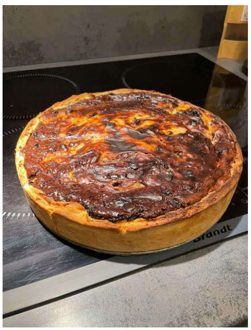

Classique revisité
Flan marbré chocolat-vanille
Objectif : un marbrage net et une texture fondante sur une pâte sucrée croustillante — en une journée.
Techniques travaillées
- Pâte sucrée : repos et fonçage
- Deux appareils à flan (vanille et chocolat)
- Précuisson à blanc et coulage en marbré
- Cuisson surveillée minute par minute
Résultat : gustativement réussi — pâte croustillante, flan onctueux. Le marbrage visuel et la cuisson restent perfectibles.
Ce que j'en retiensLa rigueur sur les temps et températures de cuisson fait toute la différence. J'ai identifié le fonçage et le marbrage comme mes axes de progression — et appris à ajuster en cours de route.